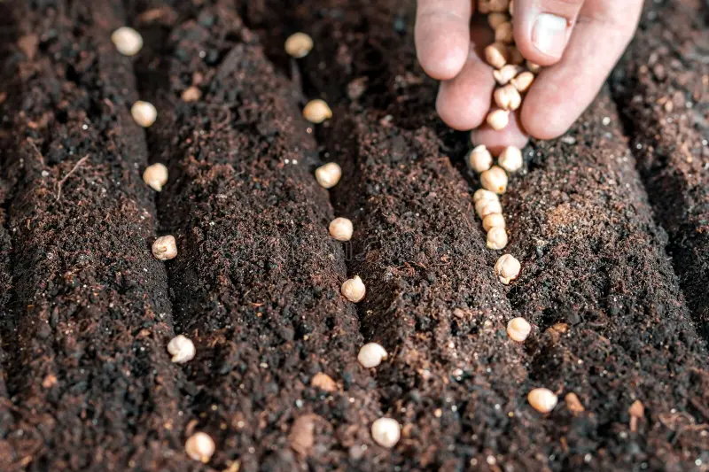
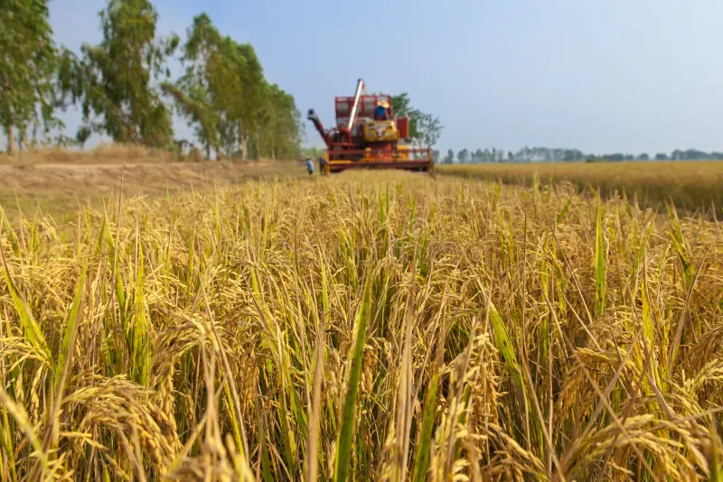
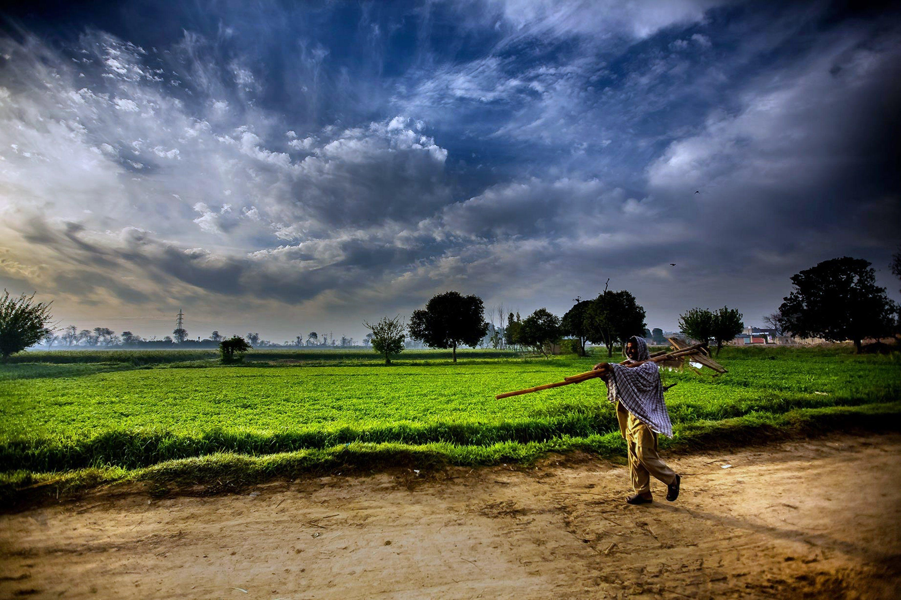

It begins with something we cannot see.
But it becomes something we cannot live without.
This is not just farming. This is survival.

01. It Begins with a Seed
It begins with something almost invisible.
A seed—silent, small, but full of unseen life.
Not planted with certainty…
but with hope.
- Not all seeds are bought — some are remembered
- Passed from generation to generation
- The future begins before it is visible
Time doesn’t rush. It allows life to unfold.

02. Growth Begins
Beneath the surface, something magical happens.
The earth accepts the seed.
The water listens.
The sun responds.
And life… quietly begins.
- Soil is not land — it is living memory
- Water is not resource — it is lifeline
- Growth is slow… but never random
What we nurture… shapes what we become.

03. Daily Care
This is where human hands meet nature.
Not machines. Not shortcuts.
But effort… repeated every single day.
Care is not an action here.
It is a way of life.
- Every day is a decision to continue
- Every failure is silently carried
- Every crop is a story of patience
Nothing grows without waiting.

04. Harvest Time
After months of uncertainty,
something finally returns.
Not just crops—
but relief, survival, and dignity.
What reaches your plate…
is someone’s entire season.
- Harvest is not profit — it is survival
- Weather decides more than humans
- Every grain carries unseen effort
But this is not the end.

05. Carrying It Forward
The story doesn’t stop here.
It asks a question—
will we continue this flow…
or break it?
The future is not waiting.
It is depending on us.
- Tradition needs continuation, not replacement
- Youth is not separate from farming
- Innovation should respect roots
And the story continues… with us.
You don’t just consume food. You consume a journey.